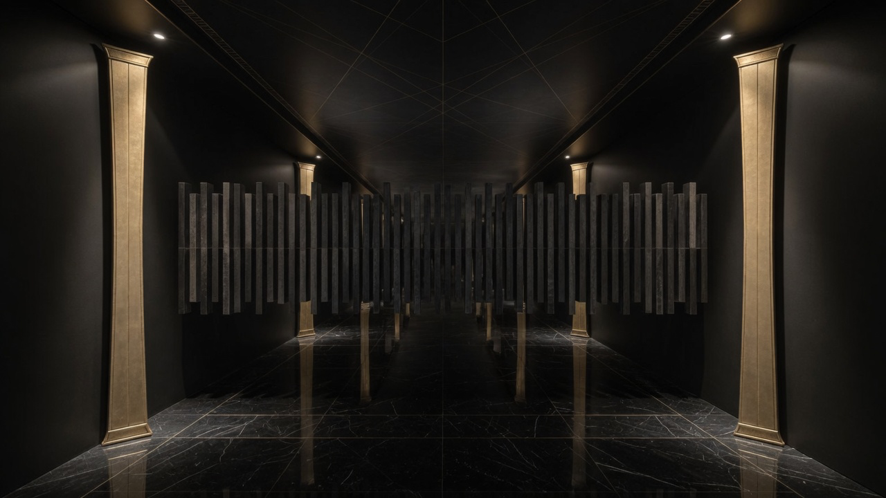
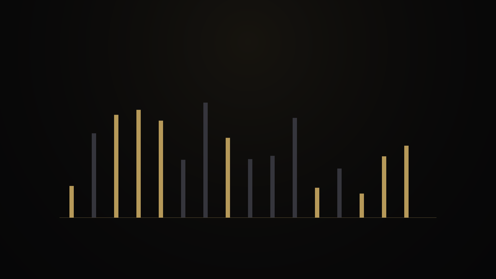
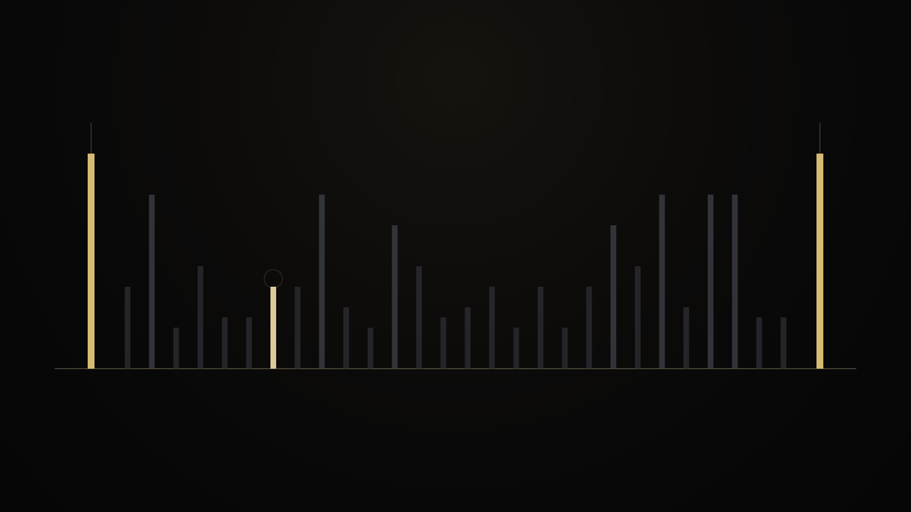
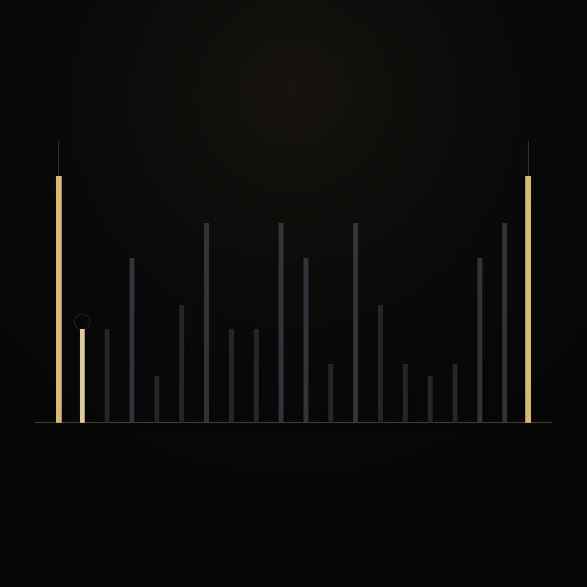
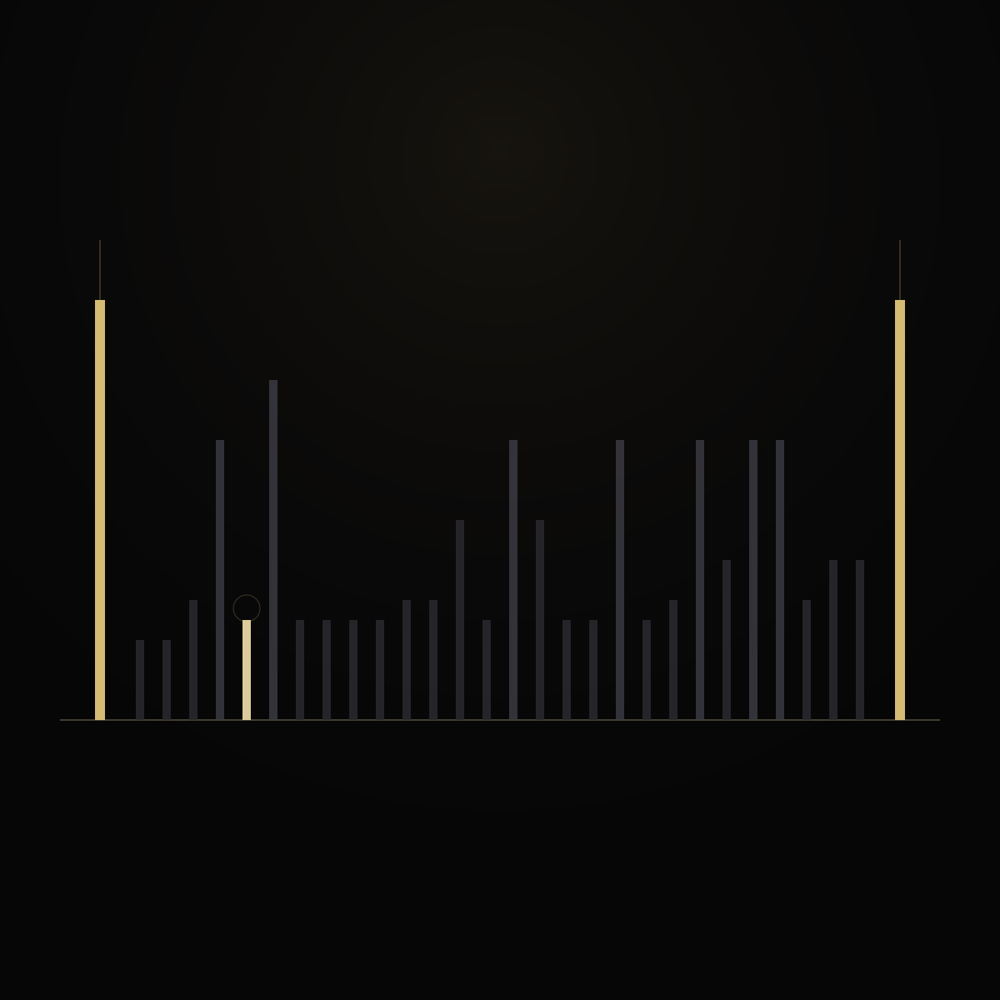
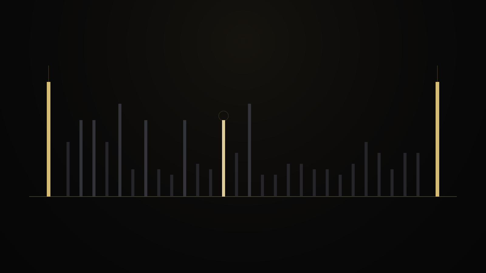
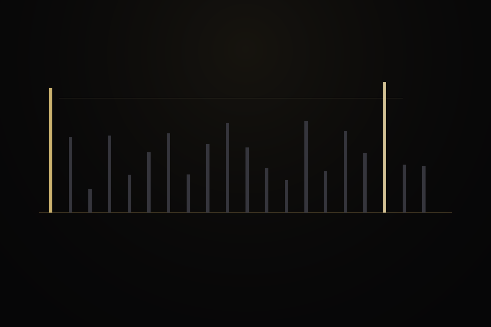
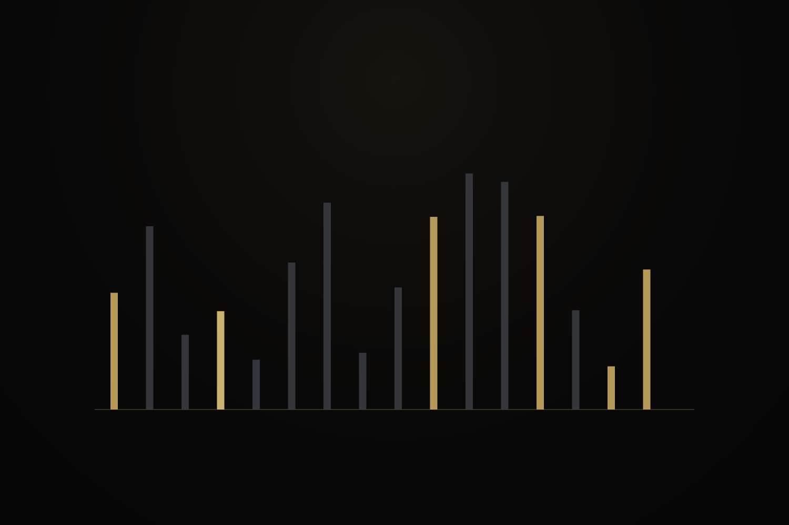
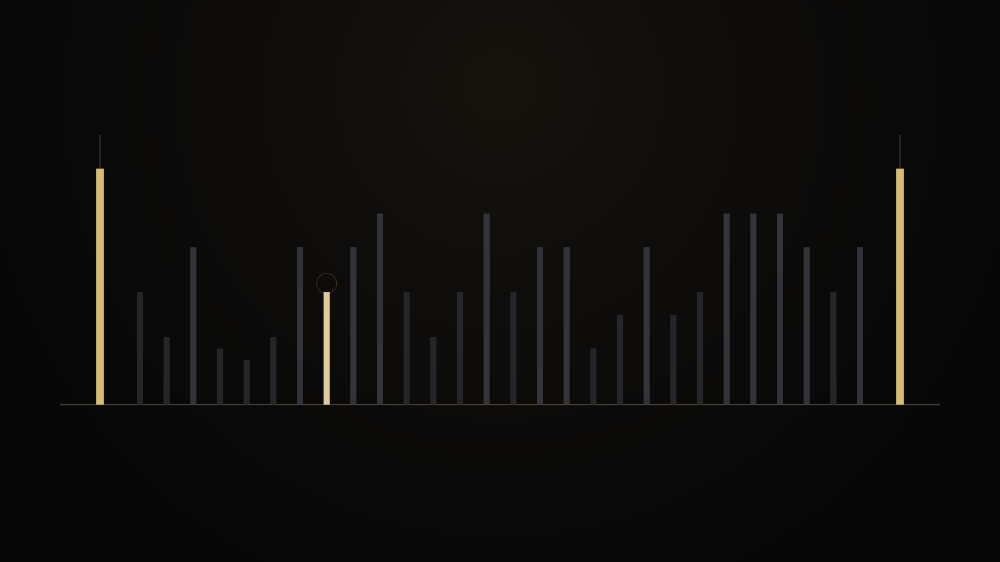
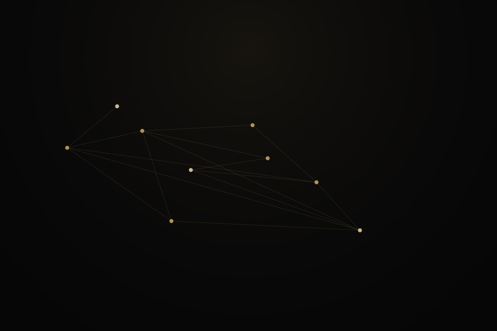

01 · Gaps
What is a prime gap?
Take two primes that sit next to each other in the list of primes. Everything strictly between them is composite. That open stretch is the gap.

A picture you can hold
Start at the prime 89. The next prime is 97. Between them live the composites 90 through 96. That list is the interior of the gap.
The gap is not a void. It is a short hallway of ordinary integers, each with its own divisor pattern.




Why this matters
Many stories jump to “is this number prime?” That is a candidate question. This course asks a gap question: what structure does the interval carry, and where does it end?
Gap scale gallery



Gap ruler lab
Bar height tracks divisor count τ



